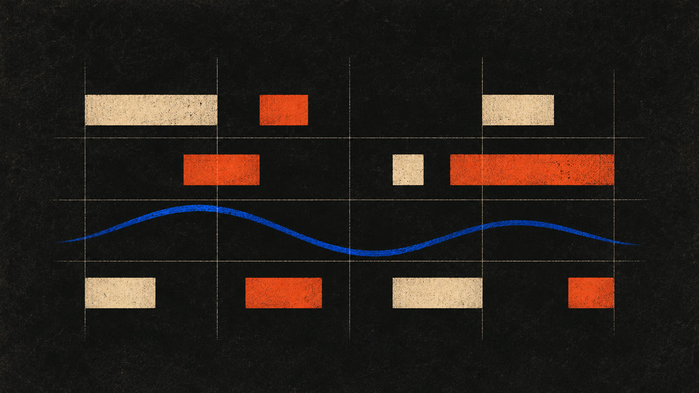

What is in the pack
Each study is 32 bars in 4/4 at 160 BPM, 480 PPQ, and exactly 61,440 ticks. Five pitched roles use user-facing channels 1 through 5, wire channels 0 through 4; drums use user-facing channel 10, wire channel 9. Bass and principal motif are monophonic. No program changes are encoded. Instrument mapping and renderer recipes.
Set map
- Introduction, bars 1 to 8, ticks 0 to 15360
- Statement, bars 9 to 16, ticks 15360 to 30720
- Contrast, bars 17 to 24, ticks 30720 to 46080
- Transformed return, bars 25 to 32, ticks 46080 to 61440
Every study uses this full four-region structure. Exact harmonic and event maps are linked below.
Use note
Use the combined arrangement or its separate part files. Do not stack the part files on top of the combined file.
Automated validation only; nobody auditioned these files.
Studies and combined downloads
| ID | Working title | Collection | BPM | File |
|---|---|---|---|---|
| f01 | Cross Grid | D natural minor | 160 | combined MIDI |
| f02 | Split Signal | F Dorian | 160 | combined MIDI |
| f03 | Redline Gap | B Phrygian | 160 | combined MIDI |
| f04 | Lattice Return | A natural minor | 160 | combined MIDI |
Catalog records
Draft publicity
DRAFT article and plain-text paste
DRAFT Instagram caption and DRAFT X post
These drafts are public files in a public repository. They are not posts to Instagram, X, or Medium.